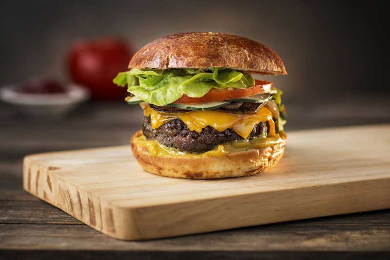

Hamburger

Description
A fresh hamburger is a classic, satisfying dish that never fails to deliver. The star of the meal
is a juicy, perfectly grilled beef patty, tender and packed with flavor. It's served in a soft, lightly toasted bun
that adds just the right amount of warmth and texture. Every bite is a delightful combination of savory beef, warmth
from the freshly cooked patty, and the comforting softness of the bun. Whether served with a variety of toppings or
enjoyed on its own, a fresh hamburger offers a simple yet indulgent eating experience that's perfect for any occasion,
from casual weeknight dinners to weekend BBQs with friends.
Ingredients
- 700 gr. chopped chuck roll
- 200 gr. chopped striploin
- 100 gr. chopped beef fat
- 3 grated clove garlic
- salt
- hamburger bun
- 2 onion rings
- lettuce
- tomato
- cheddar cheese
- sliced pickled cucumber
- mustard and ketchup
Steps
- Form the hamburgers by mixing all the ingredients, and cook them on a cast iron skillet or griddle disk on high intensity
heat and a little olive oil.
- When you see juice appear on the top side of the hamburger, turn it over and cover with a slice of cheddar cheese.
- Cook each side for about 5 minutes. Meanwhile, brown the onion rings.
- Make the sandwich adding the rest of the ingredients and enjoy!